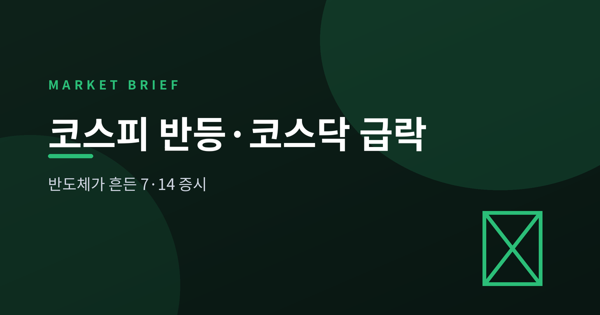
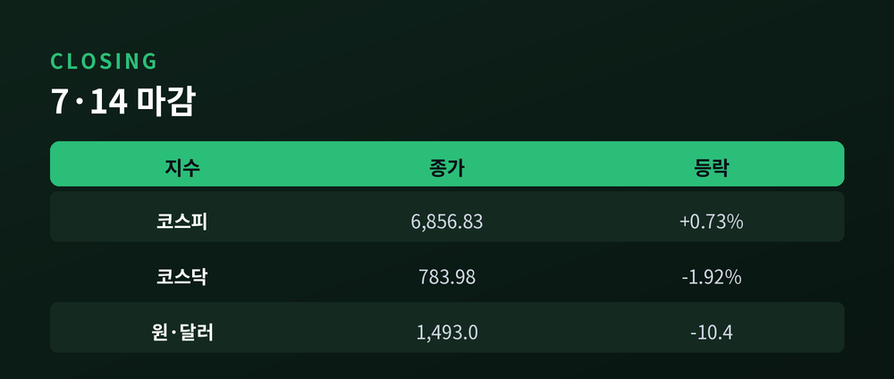
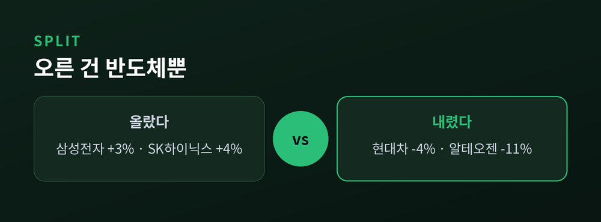
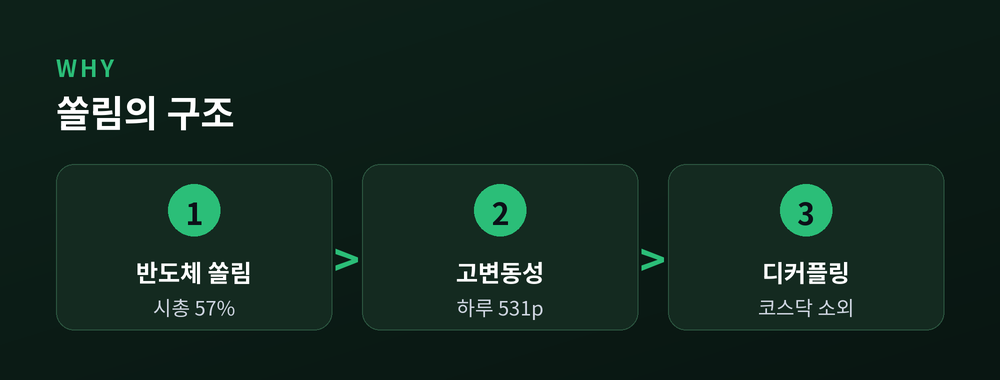
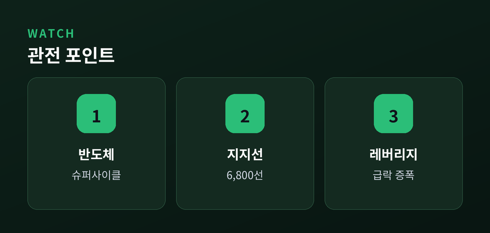

반도체가 흔든 7·14 증시, 무엇을 봐야 하나

이번 글에서는 2026년 7월 14일 국내 증시를 정리해 보겠습니다. 같은 날, 코스피는 반등했고 코스닥은 급락했습니다. 두 시장이 왜 갈라섰는지, 그 한가운데 놓인 반도체 이야기를 차분히 짚어보겠습니다.
코스피는 6,856.83으로 마감했습니다. 전날보다 49.90포인트, 0.73% 오른 값입니다.
반면 코스닥은 783.98에 그쳤습니다. 15.38포인트, 1.92% 하락한 수치입니다.
같은 하늘 아래 두 시장의 방향이 갈렸습니다.
장중 흐름은 더 거칠었습니다. 코스피는 한때 6,979선까지 올랐다가 6,448선까지 밀렸습니다. 하루 변동 폭이 531포인트에 이르렀습니다. 코스닥은 낮 12시 무렵 '매도 사이드카'가 걸렸습니다. 올해로 스무 번째, 금융위기였던 2008년 기록마저 넘어선 역대 최다입니다.
수급도 한 방향이 아니었습니다. 개인은 4조 원 넘게 팔았습니다. 반대로 기관은 3조 원대, 외국인은 1조 원 안팎을 사들였습니다. 외국인은 사흘 만에 '사자'로 돌아섰습니다. 개인이 던진 물량을 기관과 외국인이 받아낸 하루였습니다.

답은 반도체에 있습니다.
이날 삼성전자는 3% 안팎, SK하이닉스는 3%대 후반 올랐습니다. 전기·전자 업종이 지수를 끌어올렸습니다.
배경에는 전날의 충격이 있었습니다. 7월 13일 코스피는 8.95% 폭락하며 두 달 만에 7,000선이 무너졌고, 올해 일곱 번째 서킷브레이커까지 발동됐습니다. 미국 메모리 반도체주가 무너진 데다, 중동 리스크와 차익 실현이 겹친 결과였습니다. 14일은 그 낙폭에 대한 반발 매수와 '과매도' 인식이 오후 들어 힘을 실은 하루였습니다.
문제는 나머지입니다. 현대차는 4%대, KB금융과 삼성바이오로직스는 2~3%대 내렸습니다. 코스닥에서는 바이오 대장주 알테오젠이 11%대, 2차전지의 에코프로 형제가 5~6%대 급락했습니다.
정리하면 이렇습니다. 지수는 올랐지만, 실제로 오른 것은 사실상 반도체 두 종목이었습니다.

이 장면이 왜 중요한지 봅니다.
삼성전자와 SK하이닉스, 두 종목의 시가총액이 코스피의 절반을 넘습니다. 6월 말 기준 비중은 57%에 달했습니다. 반대로 코스닥이 전체 증시에서 차지하는 비중은 6.8%까지 내려가, 27년 만에 가장 낮아졌습니다.
반도체가 오르면 지수가 오르고, 반도체가 흔들리면 시장 전체가 출렁입니다. 예전엔 '조용한 강세장'이었습니다. 지금은 강세장인데도 하루 수백 포인트가 오르내립니다.
코스피와 코스닥이 따로 노는 디커플링. 그 뿌리에는 이 쏠림이 있습니다.

전문가들의 시선은 두 갈래입니다.
한쪽은 펀더멘털을 봅니다. 대신증권은 장기공급계약 확대와 메모리 슈퍼사이클이 여전히 유효하다고 진단했습니다. 기관의 저가 매수세가 반등을 이끈 배경입니다.
다른 한쪽은 구조를 경계합니다. 골드만삭스는 코스피 6,800선을 1차 지지선으로 보면서도, 레버리지 상품의 매도가 급락을 키웠다고 짚었습니다.
원·달러 환율은 1,493원으로 10원 넘게 내렸습니다. 원화가 다소 진정된 점은 그나마 위안입니다. 다만 환율 이야기는 다른 편에서 따로 다루겠습니다.

끝으로 한 가지만 덧붙이겠습니다.
지수 하나가 올랐다고 시장 전체가 좋아진 것은 아닙니다. 반대로 코스닥이 밀렸다고 모든 것이 무너진 것도 아닙니다. 숫자의 표면보다 그 안의 '쏠림'을 읽는 눈이 필요한 때입니다.
— 오른 것은 지수가 아니라 반도체였습니다.
시장이 어디로 향할지 묻는다면, 당분간은 반도체의 발밑을 함께 살펴야 한다고 답하겠습니다.
이 글은 정보 제공을 위한 해설이며, 특정 종목의 매매나 투자를 권유하지 않습니다.
참고 소스